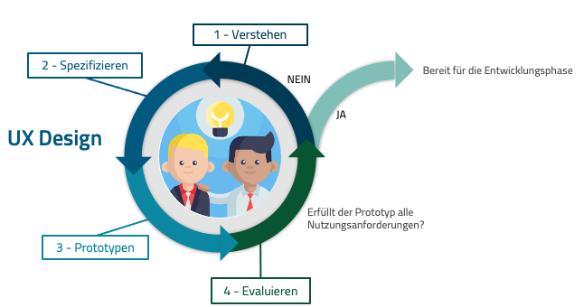

Usability als Erfolgsfaktor
Die UX Designers entwickeln einen UX Design Prozess, um die Bedürfnisse des Users und des Unternehmers abzudecken.
möglichst schnell (= effizient), auf dem richtigen Weg (= effektiv) und in optisch ansprechender Umgebung (= zufrieden) das Produkt oder die Information zu erreichen.
Qualitätsmerkmale
Die ISO Norm 9241-12 „Informationsdarstellung“ definiert die Eigenschaften der dargestellten Informationen in einem System. Damit Aufgaben effektiv, effizient und zufriedenstellend ausgeführt werden können, sollten folgende charakteristische Eigenschaften bei der Gestaltung visueller Informationen eingehalten werden:
- Klarheit: Schnelle und genaue Vermittlung der Informationen
- Unterscheidbarkeit: Genaue Unterscheidung von angezeigter Information
- Kompaktheit: Anzeige von nötigen Informationen zum Erledigen von Aufgaben
- Konsistenz: Innerhalb der Anwendung Darstellung auf gleiche Art
- Erkennbarkeit: Benutzer konzentrieren Aufmerksamkeit auf benötigte Information
- Lesbarkeit: Leicht lesbare Information
- Verständlichkeit: Informationen sind leicht verständlich, eindeutig und interpretierbar

UX Design Prozess
User Experience Design bzw. User-Centered Design ist ein ganzheitlicher Ansatz zur nutzerzentrierten Gestaltung interaktiver Systeme mit dem Ziel eine optimale User Experience zu erreichen. Nur wenn die Bedürfnisse der Benutzer und der Nutzungskontext bekannt sind und bei der Entwicklung berücksichtigt werden, kann Interaktion intuitiv benutzbar und erfolgreich gestaltet werden.
Die 3 Grundlagen- Ein klares Verständnis der Benutzer- und Aufgabenanforderungen.
- Frühzeitige und aktive Teilnahme des Benutzers zur Bewertung des Produktdesigns.
- Iterativer und Agiler Designprozess.
Gute menschzentrierte Produkte und Dienstleistungen entstehen nur durch konsequente Nutzereinbeziehung. Alle User-Centered Design Prozesse und Methoden wie Design Thinking, Service Design, Lean UX oder Design Sprints bestehen grundlegend aus diesen vier Bausteinen: Verstehen, Spezifieren, Prototypen und Evaluieren.
Verstehen und beschreiben, wer die Benutzer sind, was sie tun, welche Probleme sie haben und welche Erfordernisse sie in Bezug auf die Anwendung haben.
2- Spezifizieren der NutzungsanforderungenPräzise und bestimmbare Nutzungsanforderungen abzuleiten, die die Anwendung vor seiner Freigabe erfüllen muss.
3- PrototypenErfordernisse und Nutzungsanforderungen in eine Gestaltungslösung zu überführen.
4- EvaluierenBestimmen, ob ein Mockup oder ein Prototyp die Nutzungsanforderungen und anwendbaren Dialogprinzipien, Heuristiken sowie Gestaltungsregeln erfüllt oder nicht.
Ein Usability-Test zeigt, was repräsentative Benutzer mit dem interaktiven System erreichen können, wenn sie repräsentative Aufgaben ausführen. Die Erhebung persönlicher Meinungen von Benutzern oder deren Diskussion ist nicht Teil eines Usability-Tests.
Farben
Die Farbthemen sollen harmonisch sein, die Lesbarkeit des Textes gewährleisten. UI-Elemente und Oberflächen sollen sich voneinander unterscheiden.
Icons
regular, 24px
solid, 18px
solid, 16px
Die Icons sind unter folgender URL verfügbar: Link zu fontawsome
UI Komponenten
Die Komponenten sind in zwei Ebenen unterteilt:- Die oberste Ebene umfaßt die Grundelemente (Design System). Beispiele: Buttons, Eingabefelder, Tabs.
- Die unterste Ebene ist anwendungsspezifisch und enthält die Komponenten mit einer Business-Logik (Schnellrechner, DIN-Analyse). Beispiele: Vergleich Tabelle, Tarif Bewertung, Produktauswahl.


Templates
Verschiedene Seitentypen, die sich aus Komponenten zusammensetzen. Ein Basis Template besteht aus einem Header, Seitenmenü und Content-Bereich.

Whitelabeling
Die folgende Elemente sind whitelabel-fähig zu gestalten:- Logo
- Favicon
- Primär Farbe
- Akzent Farbe
- Seitenmenü Bild
Responsive Design
Displaygrößen unterscheiden sich stark zwischen Desktops, Tablet und Smartphone daher sollten Inhalte immer auf den jeweiligen Darstellungsbereich angepasst werden. Wenn die Breite:
größer als 1279px
Seitemenü aufgeklappt
Cards nebeneinander
zwischen 960px und 1279px
Seitemenü aufgeklappt
Cards untereinander
kleiner als 960px
Seitemenü zugeklappt
Cards untereinander
Showcase
Designkomponenten in der praktischen Anwendung
Produktauswahl

Tarif Rechner
Tarif Bewertung

Digitale Dokumentenverwaltung

Vergleich als PDF